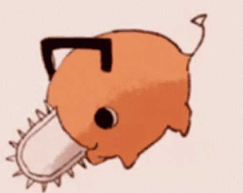

Hello! My name is Matthew Garcia. I'm currently taking classes at California State University Northridge. I am a Junior standing computer science student. I've
been programming for about 4 years. Couple things that I like are music, nature, and dogs. Some artists that I love include System of a down, Eminem, and Mac Miller.
I've been to a handful of concerts seeing System of a Down, Magic Giant, Joyner Lucas, and Rise Against. Some of my favorite places to walk around would be Santa
Monica Beach, Ol' Melvoney for hiking, and in general walking around the San Fernando Valley. Here's a gallary of some concerts, favorite look out spots, and of yours truley!

Why I want to become a software eningeer is heavily influenced by my brother. Seeing him become a successful software engineer makes me want to pursue something
meaningful for myself as well. Currently my dream is to strive to be a software engineer that would make an impact into the world. I strive to be a succesful software
engineer that is capable to lead a team of engineers. I dream of being part of the next industrial revolution. I whole heartdely believe in the next few years we will see
many technological advances in the medical field and I want to be part of the magic that will lead to new innovations. In particular, an interesting company I've been
amazed by is Neuralink. I'd like to make software that could have a positive impact on a person's life
It is important for me to start bettering myself as softwar engineer to make my mark in the tech industry